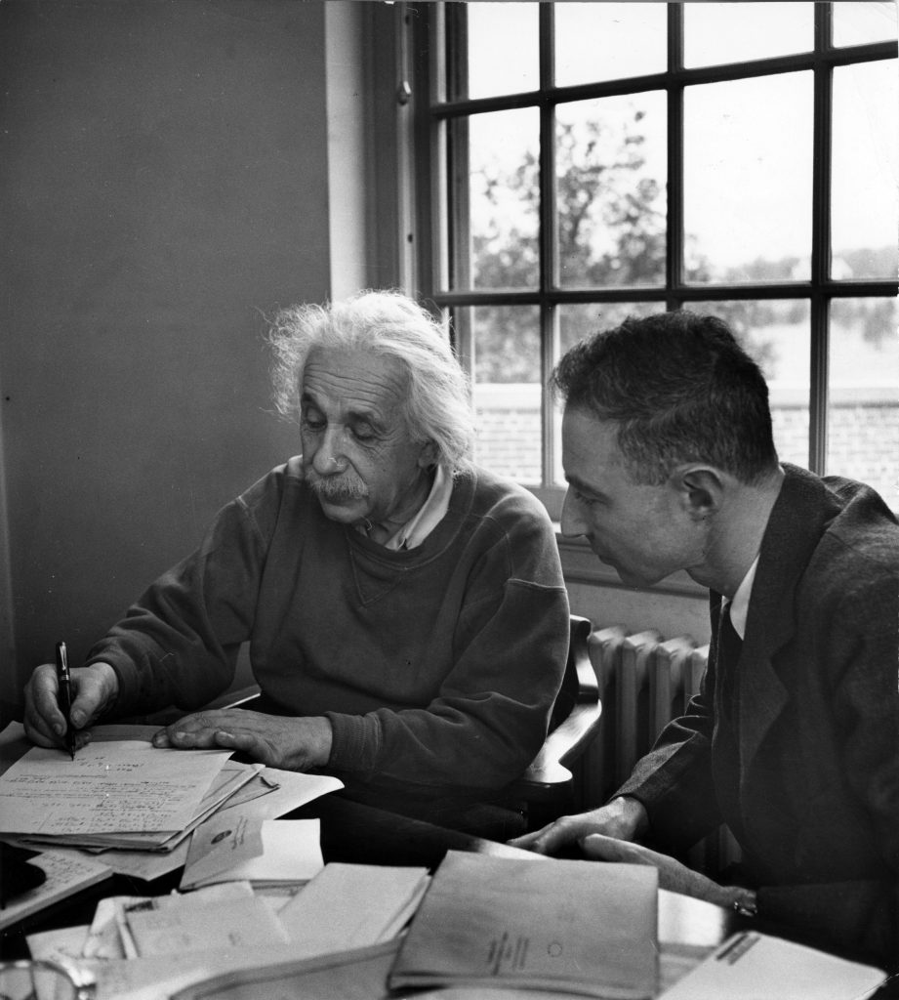

About Me
I am J. Robert Oppenheimer, a theoretical physicist perhaps best known for my role as the scientific director of the Manhattan Project, which led to the development of the first atomic bombs. My journey in science has always been driven by a deep curiosity about the nature of the universe and the forces that govern it. I’ve been fortunate to study and work alongside some of the most brilliant minds of my time, engaging in groundbreaking research in quantum mechanics and theoretical physics. Beyond science, I find inspiration in literature, languages, and philosophy. I believe that to truly understand the world, one must embrace both its scientific and humanistic sides, which has been a guiding principle throughout my life. After the first atomic test, I quoted the Bhagavad Gita: "Now I am become Death, the destroyer of worlds." This was not a declaration of pride but rather a reflection of the gravity and responsibility that came with such knowledge. Today, I am committed to advocating for arms control and seeking ways to apply scientific discoveries toward peaceful progress. My hope is that future generations of scientists and thinkers approach their work with both passion and a strong sense of moral responsibility.
.jpg)
Educational Background
I completed my doctoral studies in physics at the University of Göttingen under Max Born, one of the fathers of quantum mechanics. This foundation, combined with further research in quantum theory and nuclear physics, propelled my career and provided the skills necessary for my leadership role in the Manhattan Project.

Experience
My career includes both academic research and wartime leadership. As a professor at the University of California, Berkeley, I taught numerous courses on quantum mechanics and nuclear physics. During World War II, I was appointed to lead the scientific division of the Manhattan Project, resulting in breakthroughs that changed global science and warfare.
Paper/Patent Publications
My published research spans various topics, from quantum field theory to astrophysics. My contributions include articles on the nature of black holes and neutron stars, expanding our understanding of theoretical physics and its implications in cosmology.
Awards and Achievements
My achievements include being awarded the Enrico Fermi Award and international recognition for my contributions to nuclear physics. My leadership in the Manhattan Project has left a lasting legacy, although my later years were dedicated to nuclear disarmament and scientific ethics.
Projects
The Manhattan Project was the cornerstone of my career, involving the collaboration of scientists from around the world. In post-war years, I have been involved in various initiatives promoting nuclear responsibility and understanding the impact of atomic science on society.
Membership
I am honored to be a member of esteemed organizations such as the American Physical Society, the American Academy of Arts and Sciences, and the National Academy of Sciences. These memberships have allowed me to collaborate with peers globally to advance the field of physics.
Research Thrust Area
My primary research focus has been in quantum mechanics, nuclear physics, and cosmic radiation. I am dedicated to studying the fundamental nature of the universe and its building blocks while addressing the societal and ethical impact of nuclear science.
List of Events (Organized/Attended)
I organized scientific symposia and participated in numerous conferences focused on atomic energy, theoretical physics, and ethical science practices. Key events include the annual Physics Colloquium at Berkeley, wartime strategy sessions for the Manhattan Project, and post-war nuclear policy discussions.
Poster/Paper Presentation
Throughout my career, I presented multiple groundbreaking papers on subjects ranging from atomic physics to cosmic radiation. Notable presentations include theoretical work on electron-positron pairs and high-energy radiation, which were presented at the American Physical Society and various international physics conferences.
Courses Completed
I have completed advanced coursework in quantum mechanics, nuclear physics, and mathematical physics, as well as specialized studies in topics like quantum field theory, statistical mechanics, and atomic structure. These courses laid the groundwork for my contributions to theoretical physics and experimental science.
Contact Address
I welcome discussions and inquiries related to my work in theoretical physics and atomic science. You can reach me at the Institute for Advanced Study or contact my research assistant via email: oppenheimer241@gmail.com.